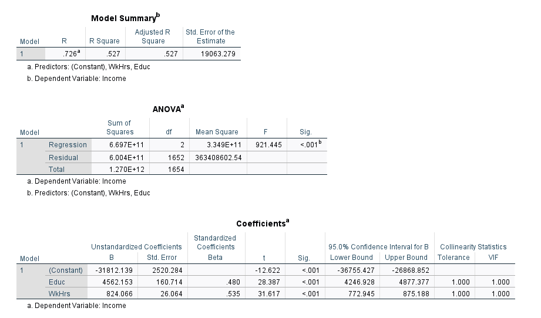
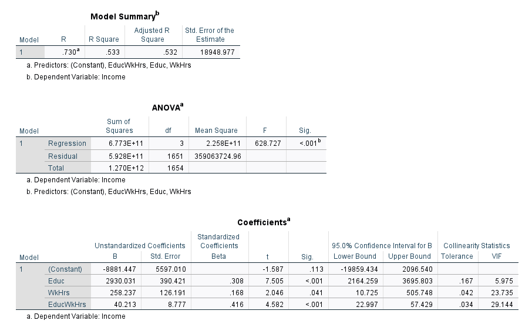
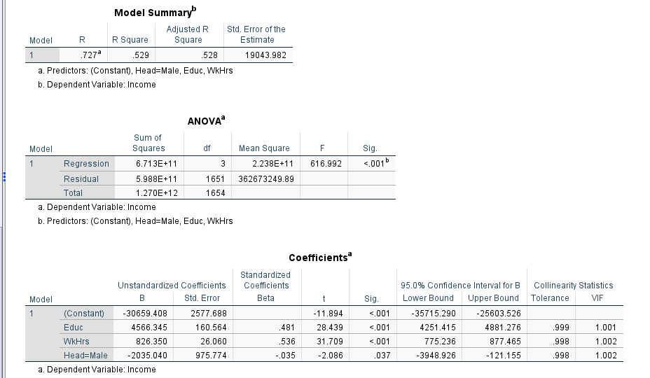
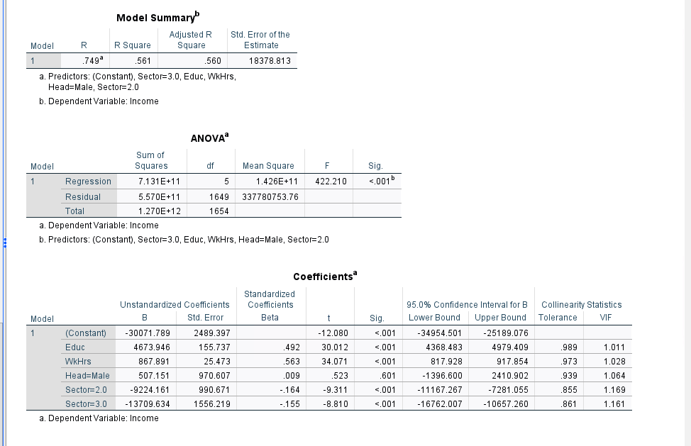
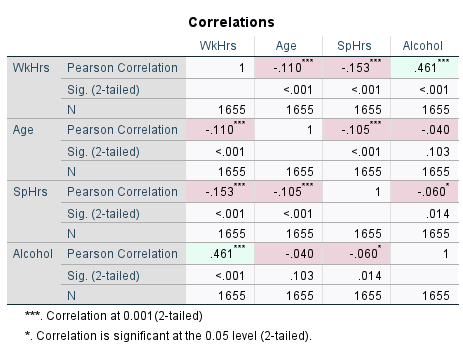
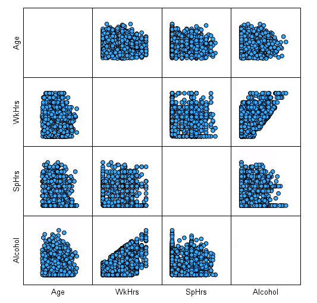

Two take-home exams from CIS 344 where I was given a raw dataset of Louisville households and a set of business questions, and had to choose the right statistical test, run it, and explain the result in plain language. This is the core of analyst work: turning a question someone actually cares about into a defensible, numbers-backed answer.
CIS 344 · Exam 1 in Excel (n = 1,890 households) · Exam 2 in SPSS (n = 1,655 households)
Each question needed a different test, so the first step every time was picking the method: checking variance with an F-test before choosing a t-test, using z-tests for proportions, and switching to ANOVA when comparing more than two groups.
| Business question | Method | Result |
|---|---|---|
| Do people 50 and older earn more than people under 50? | F-test (unequal variance) → two-sample t-test | Yes. $69,789 vs. $57,633, a $12,155 gap (t = 9.87, p < .001). |
| Is Louisville's high-school dropout rate in line with the 8.05% national rate? | One-sample z-test for a proportion | No. Estimated 10.0% (95% CI 8.7%–11.3%), significantly higher (p = .002). |
| Are younger (<35) and older (65+) adults equally likely to be dropouts? | Two-sample z-test for proportions | No significant difference. 8.7% vs. 12.9% (z = 1.89, p = .059), just short of significance. |
| Do two-earner households with one child out-earn those with none? Does controlling for age change that? | Independent t-test, then matched-pairs t-test sorted by age | No significant difference either way ($5,103 gap, p = .11). Matching on age didn't change the conclusion. |
| Do four household types (by earners and children) differ in income? | Single-factor ANOVA | No. F = 1.26 < F-crit 2.62 (p = .29). |
Exam 2 moved from comparing groups to modeling. I built a series of regression models, adding variables one at a time to see what held up, which is the same way you'd test whether a marketing channel really drives revenue or only looks like it does.
A two-variable model explained 52.7% of the variation in income (adjusted R² = .527, p < .001):

Adding an interaction term (Education × Hours) was significant and nudged adjusted R² up to .532. In plain terms, education pays off more for people who work more hours.

This was the most important result. With education and hours in the model, gender of the head of household looked significant (p = .037). But once I added employment sector, gender dropped out entirely (p = .52), while both sector variables were strongly significant (p < .001).



